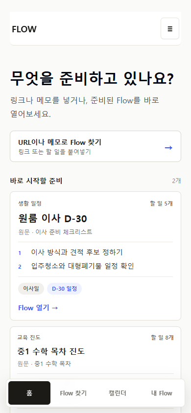

HIGH · HOME ROLE
홈이 Flow 찾기의 축약판이다
URL·메모 진입과 같은 카드 2개가 보인다. 재방문 사용자에게 지금 이어갈 실행 맥락을 주지 않는다.
처음 방문: 실제 사용 사례 · 재방문: 오늘 이어갈 일. 최근/인기는 Flow 찾기가 소유한다.
Route `/` · 390x844current_production_interaction · heuristic_simulation